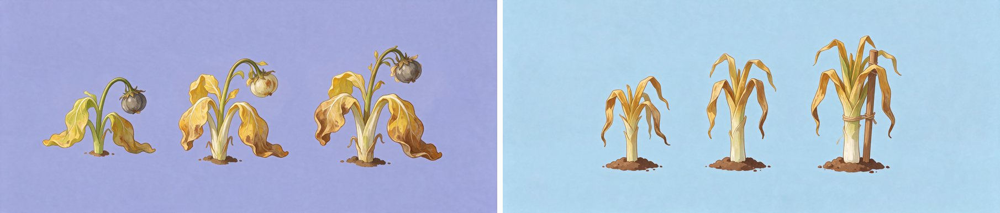
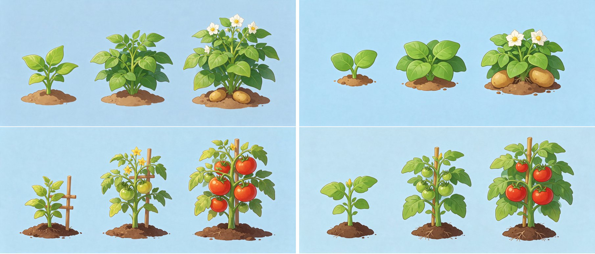

三屏
和彩纸的参考图是同一个存档、同一种排法:农场是第 1 年夏季第 3 天的 30 块地,牧场是第 1 年秋季第 20 天,矿洞是一条等着被挖的旧词矿脉。
和彩纸并排
每一对左边是彩纸的原稿,右边是现在的。同一个存档,同一种排法,同一套界面的位置。
放大看一块
农场的前三行,牧场的房子和院子,矿洞的词牌和第一条石板。
色调:改回彩纸的
负责人看过第一版之后的意见:画风可以,但整个色调比之前深一点、对比高一点,还是之前的色调好。 下面每一对左边是第一版,右边是现在的。画法没有变,变的是颜色。
量出来的(农场)
| 彩纸 | 第一版 | 现在 | |
|---|---|---|---|
| 草地(底部那一条) | #a9cf7c | #9fb756 | #adce7e |
| 草地(地块之间) | #cfe6a6 | #c0cd6c | #c6e09e |
| 天 | #dfeff1 | #c3e3f1 | #dbebf2 |
| 干土 | #e7c18c | #e8bc79 | #eac590 |
| 湿土 | #a36d4a | #7c4e31 | #a5704d |
| 干土和湿土的明暗对比 | 2.56 | 3.98 | 2.56 |
| 湿土和草地的明暗对比 | 2.46 | 3.14 | 2.37 |
| 整屏的平均明度(0 到 255) | 183 | 157 | 183 |
| 整屏明暗的起伏(标准差) | 40 | 48 | 39 |
颜色是在每张图的同一块位置取的平均值:草地取底部的一条,土取每块地左上角没有作物的一小块、按干土湿土分别平均。牧场的平均明度是彩纸 201、第一版 159、现在 192;矿洞是 170、140、现在 146(用的是第一版的画,只调亮了地面;写了色值重出的那一版是 157,没有用)。
- 怎么改的:在提示词里写明"色调和参考图一致,浅、亮、柔和、对比度低",并把彩纸色板里的色值一个个写进去(草地、天、干土、湿土、空地、叶子)。牧场重出一张就对了。矿洞也重出了一张,色调对了,但负责人更喜欢第一版画的洞和矿壁,最后没有用,见矿洞。
- 农场出了三张,每张都有画错的地方。第一张把一块湿土画成了干土,把一株没结棒的玉米画成了结了棒的;第二张整片地往下挪了,界面对不上;第三张错了三块。 第一版(色调偏深的那张)干湿 30 块全对、作物只错了一株,现在看是碰巧。
- 现在这张农场是拼的:用第一张,画错的那两块地从第一版里取同一块补上(第一版先整体调了色)。页面上其余的图没有动过。
- 底色又单独调过一次。负责人看过并排的图之后说农场和牧场的底色还是偏黄。量了一下:彩纸草地的色相是 82 到 87 度,重画出来的是 70 到 79 度,确实偏黄。
这一步没有重出图,是直接调的:只把偏黄的草地色拉向彩纸草地的色相,干土、草垛、穗、蔫了的黄叶和深绿的叶子都不在调的范围里。调完是 82 到 86 度。做法在
regreen.py。 - 这说明两件事。色调是管得住的:写进提示词就行,也可以事后整体调色。状态是管不住的:整屏重画,每次都可能错一两块。所以整屏的图只能当概念稿,真要用得一样一样出素材、一样一样核对。
- 色调回到彩纸之后,美术规范里的色板和明暗对比那两章又用得上了。
农场
左边是彩纸的原稿,中间是模型拿到去掉文字和界面的原稿之后画出来的原样,右边是叠上界面之后。
30 块地逐块对过
| 查的是 | 结果 | 说明 |
|---|---|---|
| 干土、湿土、空地 | 30 块全对 | 其中 2 块是补的,见上面"色调"一节。干土和湿土的明暗对比是 2.56,和彩纸一样 |
| 蔫了的(2 株) | 都认得出 | 叶子发黄、下垂 |
| 不生长的(3 株) | 都认得出 | 一片叶子发黄。"整株歪向一边"画得很轻 |
| 作物是哪一种、长到哪一步 | 30 块全对 | 其中 1 块是补的(那株玉米) |
| 作物的点睛色 | 对 | 萝卜的根肩是白色带淡粉。第一版里丢了,把它写进提示词之后回来了 |
| 位置 | 没有挪 | 水滴、收获标记、星带按彩纸的坐标叠上去,都落在该落的地方 |
- 状态怎么表示,一条没改。能浇水是干土加水滴,浇过了是湿土,品质是星带,快收获是四角星。换的只是画法。
- 水滴和四角星是代码画的,所以"蓝色只表示水""黄色表示得到的东西"这两条在这一屏上还守得住。场景里的天是蓝的,这一条规矩在新画风下要重新写。
牧场
彩纸的牧场是 2026-11-21 定稿、11-22 合并进主干的。这里用的是它的参考图那一屏。
- 排法保住了:房子在上,院子在中间,草地在下;牛、羊、鸡的数量和位置都对,卧在干草上的那头牛和抱窝的那只鸡也在。
- 草上的穗数得出来了。第一版里穗被画成红褐色的小点,数不清。这一版在提示词里写了"穗是玉米黄色的小椭圆,矮的 1 根、中等的 2 根、高的 3 根,要数得清",画出来是黄色的、一根一根分开的。 但每株画了几根没有逐株核对,而且草本来就不和词绑定,整屏的图也核对不了。
- 见底的感叹号是叠上去的。参考图里饲料桶旁边那个感叹号模型没有画,按规则补在原来的位置。
- 草是绿的,和院子、草地分得开。
矿洞
词牌和四条石板要求模型留白,单词、音标、释义和标签都是代码叠上去的。
- 岩层的构图保住了:木梁、提灯、挂着的词牌、探出来的矿石、镐、四条石板、石板右端的矿。
- 这一屏用的是第一版的画。负责人看过之后先后说了两点:第一版里词牌周围那一圈矿洞的感觉很好(洞是深的,两边露着石头,梁下挂着灯);矿壁也要第一版的,有地层的感觉。 改色调重出的那一版把洞画平了、灯没了,矿壁成了一块块灰褐色的石头,所以没有再用。 现在只动了一处:最下面的地面从接近黑色调亮到色板里的岩石深,规范里洞里最深的颜色是岩石深,不是黑。
- 字读得清。单词 40pt、释义 17pt 压在模型画的牌子和石板上,底色干净,没有纹理抢字。
- "点石板的那一下就是那一镐"没有变,但答对、运气好、答错三个关键帧这次没有画。石板裂开、矿石弹出要的是能动的素材,一张拼好的图做不了。
- 石板比彩纸更像一块块石头了,"静止时像一张选择题列表"这个老问题轻了一点。这是我自己看的。
缩小之后
规则允许地块扩到 120 块,那时每块地在屏幕上只有约 28pt。当初选彩纸的第一条理由就是它缩小之后状态最好认。下面按真实大小显示,请在手机上看。
- 干湿、水滴、收获标记都清楚。干土和湿土的明暗对比现在和彩纸一样(2.56)。水滴和收获标记本来就是代码画的,两边一样。
- 作物两边差不多:都只剩轮廓和主色,蔫了的那两株靠发黄还认得出。
- 这个判断是放大三倍看截图得出的,真实大小下线稿会不会糊,要在手机上看。
- 这是在一张缩小的整图上看的。真正的小图标应该单独画一套简化的,不是把大图缩小。
用素材拼出来的农场
上面的农场是模型一次画出来的整张图,游戏里不能这样用,而且每次重画都会画错一两块地。这里换成游戏里真正要用的做法: 背景一张,地块三种,每种作物的每个状态各一张带透明底的小图,按存档一块一块摆上去。哪块地是什么状态由数据决定。
- 状态不会再画错。30 块地的干湿、作物是哪一种、长到哪一步、蔫没蔫,都是按存档摆的,不经过模型。这解决了整屏重画最大的毛病。
- 改一处不用重出别的。一块地浇了水,只是把干土换成湿土;一株长了一截,只是换一张小图。
- 单独出的素材,画得比整屏那版细。对比左边两屏:整屏重画的作物圆胖、概括,像图标;单独出的枝叶多、茎细,更像植物图鉴。缩到一块地那么大时显得碎。 提示词是能管住这一点的,见下面"圆胖一点"的试验;现在这一套没有重出。
- 种子的土堆是浅色的,摆在湿土上像一堆干土。种子应该分干土、湿土各出一张,或者不画土堆。
- 枯萎的那几株偏褐、偏乱,比彩纸的"蔫了"重。规范的第 5 条原则是"蔫了,不是坏了",不吓人。这一套要往轻里调:只发黄、下垂,不要褐斑和发灰的果子。这是我自己看的。
- 干土上有几粒石子,12 块干土一模一样,看得出是同一张图。要么去掉石子,要么出两三种换着用。
换一个存档
素材齐了之后,换存档不用再出图。下面把十二种作物都种上,生长阶段和健康状态随机排。
素材一览
一共 个,按在屏幕上的真实大小摆。每种作物九个:幼苗、成株、成熟三个阶段,各有健康、不生长、枯萎三种样子。 种子和发芽所有作物共用。全部是 AI 生成之后切出来的。
三种地块:干土、湿土、空地。
是怎么出的
- 健康的:一种作物出一张图,一行三株(幼苗、成株、成熟),纯色背景,用农场那一屏当参考图对齐画法。12 张。
- 不生长的、枯萎的:不重新画,而是把健康的那张当参考图,只要求"每株歪一点、黄一片叶子"或者"全部发黄下垂"。这样三种样子是同一株。各 12 张。
- 切开:按背景色从四边往里抠掉,再按空隙切成三个,按作物定在屏幕上的大小。
- 共用的:种子、发芽、三种地块、背景,另外 5 张。
画错的,和重出的
41 张里第一遍有 3 张不能用,重出了 5 次才都对。

- 左:枯萎的白菜,模型给它长出了果子。右:枯萎的韭葱,多了一根木棍和绳子。
- 木棍是我的提示词招来的。葡萄的木架第一遍少了一根柱子,我加了一句"支架原样不动",结果没有支架的白菜和韭葱被添上了支架。现在这句话只对有支架的三种作物说。
- 素材错了看得出来,也好改。一张图只有三株,一眼看完;错了只重出那一张。整屏重画错了一块,要整张重来。
- 这一遍是我一个人看的。41 张逐张看过,有没有漏掉的小毛病(比如哪一株多了一片叶子)不敢保证。
圆胖一点的试验
在提示词里加一句"形体圆胖、概括、像图标,每株只有很少的几片又大又圆的叶子",土豆和番茄各出了一张。左边是现在用的,右边是加了这句的。

- 有用。土豆变化最明显:叶子少了、大了,更接近整屏重画那一版和彩纸的"圆胖"。番茄变化小一些。
- 没有整套重出。重出是 36 张。要不要、圆胖到什么程度,等负责人看过再定。
用量
- 这一步一共 49 次调用,约 60 万个输出 token:作物 36 张,共用的 5 张,重出 5 张,试圆胖 2 张,最开始试九宫格 1 张。每张 20 到 140 秒。价格以账单为准。
- 并发多了会被限流。4 张同时出,第 9 张起被拒绝了;降到 2 张同时出就没有再遇到。
- 切出来 115 个素材加一张背景,共约 1.3MB(3 倍屏的大小,WebP)。提示词在
sprites/manifest.json。
还没有做的
- 抠图还有残留:模型在有的土堆旁边画了一点影子(南瓜的是蓝的,白菜的是紫的),颜色比背景深,没有抠干净。
- 作物在地块上的位置是按一个固定的点摆的,贴地的(西瓜、南瓜)和高的(玉米)没有分别调。
- 生长的动画:从一个阶段到下一个只能换图,中间怎么过渡没有做。
- 牧场和矿洞没有拆成素材。牧场要拆的有牲畜的各种状态、三种高矮的草、草垛和饲料桶的几档;矿洞要拆的是石板的几种状态和七级矿石。
- 没有在引擎里试:图集怎么拼、包体多大、一屏 120 块地时的内存。
- 120 块地的全景要另一套更简化的小图,没有出。
怎么做的
- 把彩纸的画面去掉文字和界面,只留场景(
source.html)。农场连水滴、四角星和星带也去掉。 - 当参考图交给图像模型,要求按新画法重画,构图和每样东西的位置、数量、状态不变,画面里不要有字和界面。第一版三屏各出了一张。改色调时农场出了三张,挑了错得最少的一张再补了两块,见色调。
- 把顶部信息、底部按钮、单词和释义、标记叠回去。这些是代码画的,用的是彩纸那一屏的坐标,一个没有挪。界面的图形还是彩纸那一套,只把硬边投影换成了一圈深褐色的线稿加投影。
- 彩纸的那几屏没有白做。它们现在是布局稿:排法、尺寸、状态的表示法都定在那里,模型照着画。以后要改一屏的排法,先改彩纸的代码,再重画。
- 用量:整屏重画这一部分一共 11 次调用,每张 25 到 60 秒;素材那一部分另有 49 次,见用素材拼的农场。价格以账单为准。提示词在
generated/manifest.json和sprites/manifest.json,里面没有任何作品和画师的名字。
没做的,和发现的问题
发现的问题
- 界面没有重新设计。顶部的药丸、底部的按钮、水滴、星带都是彩纸的图形描了一圈线。它们和场景放在一起能看,但不是为这种画风设计的。
- 人物还没有放进这三屏。玩家自己的角色、居民在场景里是什么样、多大,没有画。
- 规范里的几条规矩要逐条过:色调回到彩纸之后,色板又用得上了。"没有描边、渐变""一切都是纸片"不再适用。"蓝色只表示水"要重新看:天是很浅的蓝,和水滴的蓝差得开,但它确实是蓝的。
- 整屏重画管不住状态。农场出过四张,只有一张干湿全对,其余的错一到三块,还有一张整片挪了位置。模型大体照做,细处自己发挥。靠单独的素材加逐项核对能管住。
- 同一屏每次出图都不一样。画面要改一处,就得整张重出,别的地方也会跟着变。
没做的
- 矿洞答题之后、矿洞关门、割草答题、做饲料、买卖、词袋、商店、小镇地图、对话:都没有重做。
- 没有动效。
- 没有按新画风写色板、字体和形状的规定。字体沿用原来的三种。
- 没有上真机,只在浏览器里按手机宽度看过。
- 没有问过任何目标用户。"认得出""读得清"是我自己看的。
- 没有做色觉模拟,没有重新算明暗对比。
- 没有在引擎里试过:位图素材的包体、内存、图集怎么切。
- 没有逐张比对画面是否像某个已有游戏的画面。
- AI 生成的美术能不能上架、版权归属,仍然没有答案,见
../06-roadmap.md的未决问题。现在整个画面都落在这个问题里了。